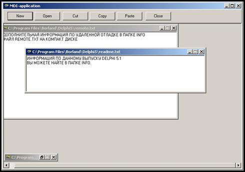

MDI
Многодокументный интерфейс (Multiple Document Interface – MDI) позволяет работать одновременно с несколькими документами, используя одни и те же функциональные возможности. MDI-приложение создает рабочую область, в которой пользователь может располагать свои окна с документами, и инструменты, нужные пользователю для работы с этими документами.
Характеристики MDI-приложений:
- Главное окно MDI-приложения обеспечивает своеобразный «рабочий стол» для организации дочерних окон (документов);
- MDI-приложение может иметь любое количество открытых дочерних окон;
- Главное окно MDI обычно имеет меню для управления дочерними окнами;
- Окна документов не имеют меню. Они получают команды из главного окна;
- Окна документов находятся строго в пределах главного окна;
- В свернутом состоянии окна документов отображаются значками в нижней части главного окна;
- При максимизации окна документов оно занимает всю клиентскую часть главного окна.
Пример MDI-приложения показан на рисунке 1.
>>>>>> f12edd62888d7f1067e2a4e99743dfe436d13998 ======= src="file:///C:/Users/THARSA~1/AppData/Local/Temp/msohtmlclip1/01/clip_image002.jpg" >>>>>>> f12edd62888d7f1067e2a4e99743dfe436d13998 />Для того, чтобы определить вид окна, используется свойство формы FormStyle. Для главной формы оно принимает значение fsMDIForm, а для дочерней формы – fsMDIChild.
Главное окно MDI-приложения создается автоматически при запуске приложения и уничтожается при его закрытии. Дочерние окна создаются во время работы приложения при нажатии на кнопку <New> панели управления главного окна, а уничтожаются при щелчке по системной кнопке закрытия дочернего окна. Способ создания окна задается во время разработки проекта в главном меню Delphi: Project | Options | Forms. Автоматически создаваемые формы помещаются в список Auto-Create forms, а формы, создаваемые во время выполнения программы, помещаются в список Avialable forms.
Для создания дочерней формы используется конструктор класса TComponent:
Constructor Create (AOwner: TComponent); virtual;
В качестве владельца вновь создаваемой формы выбирается приложение (Application).
Для закрытия дочернего окна во время работы программы нужно дополнительно написать обработчик события OnClose для дочерней формы. В этом обработчике нужно параметру Action присвоить значение caFree, что означает уничтожение дочернего окна и освобождение памяти.
Для управления расположением дочерних окон во время работы приложения используются следующие методы:
- Cascade – дочерние окна располагаются каскадом;
- Tile – дочерние окна располагаются мозаикой;
- TileMode – стиль расположения дочерних окон – горизонтальный или вертикальный (tbHorizontal, tbVertical).
Порядок создания MDI-приложения
1. Определите главную форму. Для этого присвойте ее свойству FormStyle значение fsMDIForm;
2. Разместите на форме панель (класс TРanel, страница Standard палитры компонентов). Выполните выравнивание панели по верхнему краю;
3. На панели разместите необходимые компоненты;
4. Откройте новую форму с помощью главного меню Delphi File | NewForm;
5. Сделайте новую форму дочерней. Для этого присвойте ее свойству FormStyle значение fsMDIChild;
6. Разместите на дочерней форме необходимые компоненты;
7. Подключите модуль дочерней формы к модулю главной формы, включив его имя в список uses модуля главной формы;
8. Создайте обработчик событий OnClose для дочерней формы и в нем присвойте параметру Action значение caFree;
9. Создайте для кнопки «Новый документ» главной формы обработчик события, создающий при каждом щелчке по данной кнопке новое дочернее окно. Для этого предварительно объявите объект от класса дочерней формы. Имя объекта может быть любым правильным идентификатором;
10. Напишите обработчики событий для всех оставшихся кнопок панели управления главной формы.